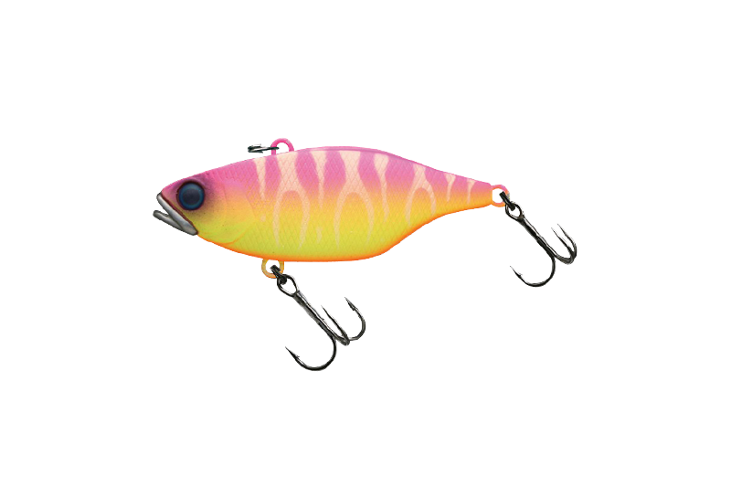
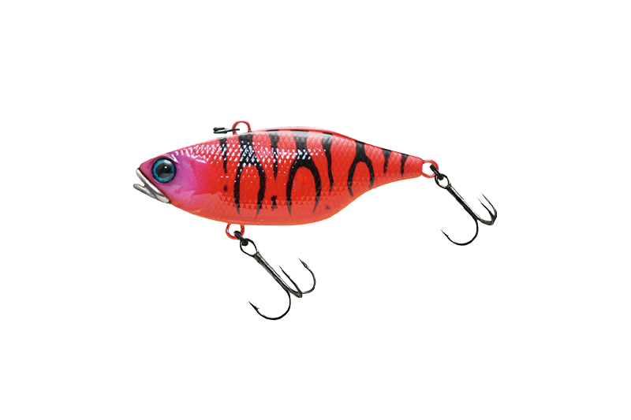
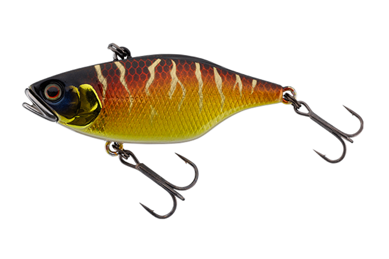
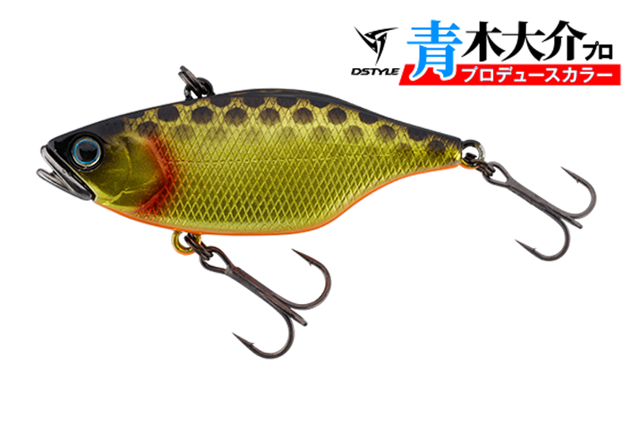

TNバイブレーション
（TN VIBRATION）
TNバイブレーション（TN VIBRATION）はJACKALL（ジャッカル）のバイブレーションです。
原点にして頂点。THE KING OF VIBRATION。主なターゲットはブラックバスです。
最大の特徴は、口の部分に高比重タングステンの成形ウェイトを付けた「O.M.S（アウトメタルシステム）」。“釣れるバイブレーション”として国内はもちろん世界各国でも長年高い評価を得ていて、バスをはじめさまざまなゲームフィッシュで実績があります。

画像出典:JACKALL公式HP
スペック
- メーカー
- JACKALL（ジャッカル）
- タイプ
- シンキング
- 代表サイズ（TN60）
- 60mm・12.7g
- フック（TN60）
- ST36MF フロント#6／リア#8
- サイズ
- 50（52mm）・60・65（64mm）・70・80の5サイズ
- バージョン
- オリジナル・フルタングステン・サイレント（TN80はオリジナルのみ）
- 搭載システム
- O.M.S（アウトメタルシステム）
- 価格（TN60）
- 1,815円（税込）
▼今すぐチェック

TNバイブレーションの特徴
ボディの外にウェイトを付けたO.M.Sで、飛距離と安定した姿勢を両立
-
O.M.S（アウトメタルシステム）
ボディの外にウェイトを設計して低重心にすることで、キャスト時の飛行姿勢と、超スローから速巻きまであらゆる速度でのアクションが安定する。
-
ボトムで倒れ込まず、根掛かりしにくい
ボトムで倒れ込まない姿勢で、根掛かり回避性能に優れる。ボトム感知能力が高く、姿勢を立て直すレスポンスも速い。
-
3つのバージョンでサウンドを使い分け
高音が響くオリジナル、大音量と重低音のフルタングステン、ラトル音がなく最も波動が強いサイレント。状況に応じて使い分けられる。
TNバイブレーションの使い方
基本はただ巻きです。超スローから速巻きまでアクションが安定するので、まずはボトムを感じながら、レンジを変えて巻いてみましょう。
低水温期は、ボトム感知能力の高さを活かしてボトム中心に。シンキングの特性を活かしたリフト＆フォールで、動きが鈍くなったバスにもアピールできます。
TNバイブレーションの得意な状況
低音のラトル音で広い範囲のバスを探りたい時や、低水温で活性が低いバスをボトムで狙いたい時が得意です。
TN60は岸釣りからボート、野池から人造湖、広い天然湖までカバーするオールラウンダー。プレッシャーの高い野池ではTN50、琵琶湖のような大きな湖ではTN70やTN80も出番です。
ワンポイント
フルタングステンモデルは「良型から優先的に反応する」ビッグフィッシュキラーとして人気です。スレている時はサイレントモデルを試してみましょう。
TNバイブレーションのサイズの使い分け
| モデル | 全長・重さ（オリジナル） | 特徴 |
|---|---|---|
| TN50 | 52mm・9.0g | 一口サイズの切り札。野池やプレッシャーの高い状況に |
| TN60 | 60mm・12.7g | TNシリーズの代名詞。岸からボートまで使えるオールラウンダー |
| TN65 | 64mm・15.0g | 60と70の間を埋める設定。体高で強い波動 |
| TN70 | 70mm・18.0g | 琵琶湖などの大型の天然湖で。ウィードフラットやマンメイドに |
| TN80 | 80mm・29.4g | ただ巻きで3mレンジを攻略できるフルサイズ |
※数値は公式ページより。TN50〜70にはフルタングステン・サイレントもあります。
オススメカラー
TNバイブレーションはカラーが豊富で、DSTYLEとのコラボカラーもあります。そのうち4色を紹介します（画像は公式ページより）。

桃虎TNの超人気色。まず1つ選ぶならこの色。

赤虎赤系のアピールカラー。濁りの日に。

HL赤金ホログラムの赤金。フラッシングでアピール。

DAキンクロDSTYLE×TNのコラボ企画、青木大介さん監修のキンクロ。
画像出典:JACKALL公式HP
TNバイブレーションに似ているルアー
-
 ソウルシャッド
ジャッカル
詳細はこちら＞
ソウルシャッド
ジャッカル
詳細はこちら＞
同じジャッカルのバス用シャッド。
-
 エッジバイブ120
エレメンツ
詳細はこちら＞
エッジバイブ120
エレメンツ
詳細はこちら＞
バス用のバイブレーション。
-
 カンナ18
ポップシークルー
詳細はこちら＞
カンナ18
ポップシークルー
詳細はこちら＞
シーバス用のバイブレーション。ヒラ打ちドリフトで。